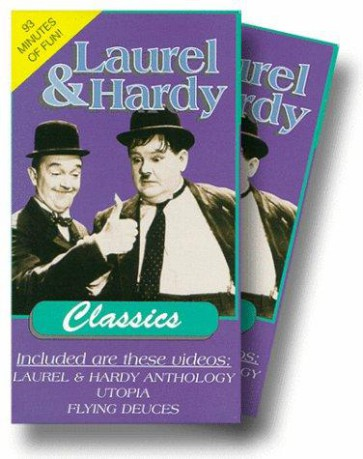

")
Alternativ: A Laurel and Hardy Cartoon
 
 IMDB-Wertung: 7.5 / 10
IMDB-Wertung: 7.5 / 10  Metascore:
Metascore: 
Sie sind das beliebteste und bekannteste Comedy-Duo der Filmgeschichte: Dick & Doof In dieser wunderbaren Hanna-Barbera Zeichentrickserie (Familie Feuersteun, Tom & Jerry) reisen Stan Laurel und Oliver Hardy einmal um die ganze Welt. An den verschiedensten Orten erleben sie unglaubliche Abenteuer und landen immer wieder in den verrücktesten Situationen. Da bleibt kein Auge trocken - mit dem beliebten Dick und Doof-Slapstick Humor folgt rasant ein Gag nach dem anderen.
Jahr: 1966
Dauer: 4 Minuten
FSK:
Land: USA Studio: Allworld Telefilm SalesTonspuren: DD2.0 - ,
Untertitel:
Auflösung: SD (688x528) Größe: 127 MB
Genre: Komödie, Animation/Trick, Familie, TV-Serie
Regisseur: Joseph Barbera, William Hanna
Drehbuch: Stefan Barth
Soundtrack:
Darsteller:
 Hal Smith als Various Characters 20 episodes, 1966
Hal Smith als Various Characters 20 episodes, 1966 Paul Frees als Various Characters 20 episodes, 1966
Paul Frees als Various Characters 20 episodes, 1966 Don Messick als Various Characters 20 episodes, 1966
Don Messick als Various Characters 20 episodes, 1966Datei: X:\Kinder Serien\Dick und Doof S01\Dick und Doof S01E001.mkv seit 29.12.2017
Festplatte: Kinder-Filme+Trick
 Es gibt insgesamt 56 Filme in der Gruppe 'Kinder Serien'
Es gibt insgesamt 56 Filme in der Gruppe 'Kinder Serien'